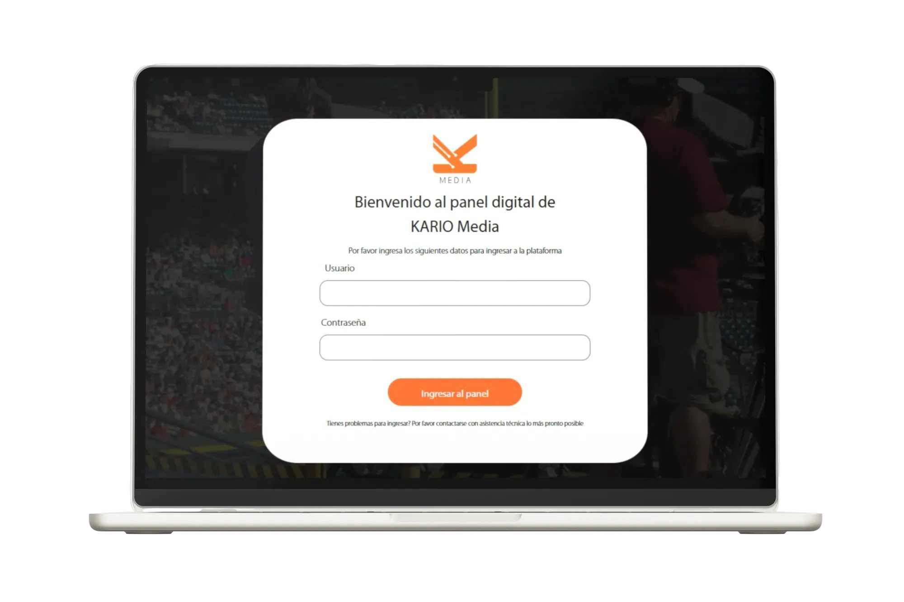
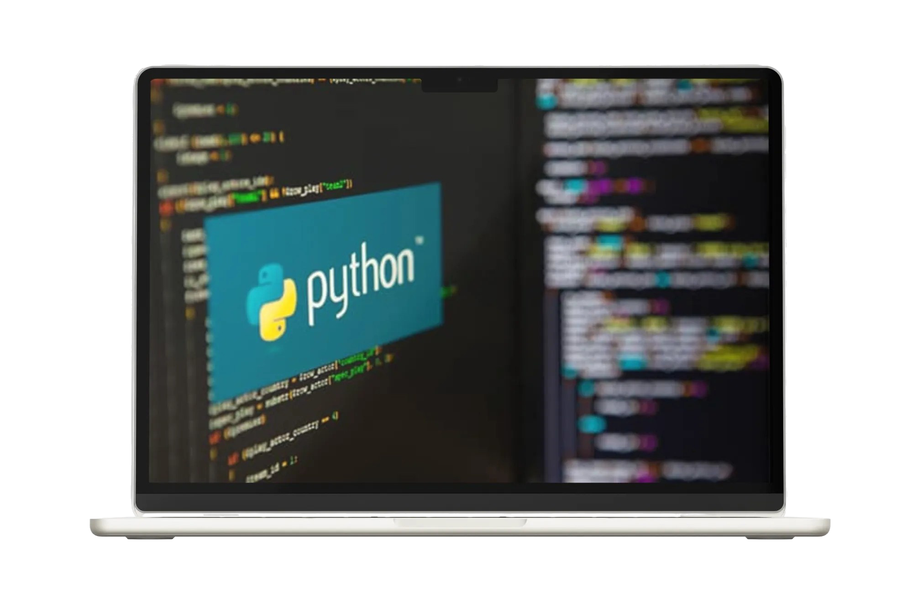

Proyectos

Fórmula Uno
Formula Uno
Desarrollo de una simulación interactiva desarrollada con tecnologías web modernas. Su propósito es ofrecer una experiencia digital inmersiva, permitiendo a los usuarios gestionar circuitos, pilotos y vehículos mediante una interfaz intuitiva y dinámica.

Kario Media
Kario Media
Desarrollo de un panel digital diseñado para facilitar la gestión de contenido y usuarios. Los usuarios al interactuar con los diferentes módulos propuestos son direccionados de manera eficiente a estos.

Aula Virtual
Aula Virtual
Sistema ERP desarrollado en Python para la gestión académica de un programa intensivo.
Permite registrar campers, entrenadores, rutas y evaluaciones con lógica CRUD y persistencia en JSON.
Un proyecto que refuerza el uso práctico de Python en entornos reales y estructurados.